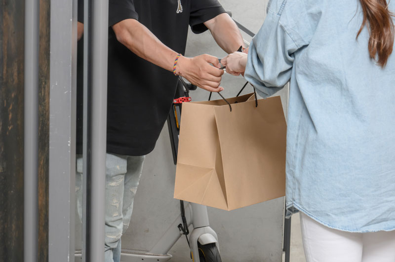

한 끼의 선택을 만드는 현장
공식 영상 소개는 제휴 식당을 방문하고, 현장의 의견을 듣는 식권대장 담당자들의 업무를 다룹니다. 직원에게 보이는 간단한 결제 뒤에는 이용할 수 있는 식당을 연결하는 일이 있습니다.
직원의 사용 경험과 회사의 운영을 함께
기업의 식대 운영 데이터를 관리하고 실제 이용 현장의 피드백을 반영하는 과정도 소개합니다. 식사복지는 식당의 수뿐 아니라, 회사의 운영 기준과 직원의 일상이 얼마나 자연스럽게 연결되는지가 중요합니다.
도입을 검토한다면
직원이 주로 근무하는 지역, 이용 시간, 필요한 식사 유형을 먼저 정리해 보세요. 상담에서는 우리 회사 주변의 이용 환경과 식대 정책을 함께 확인할 수 있습니다.